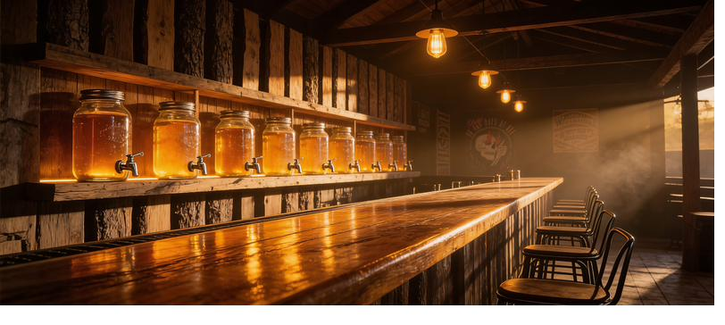
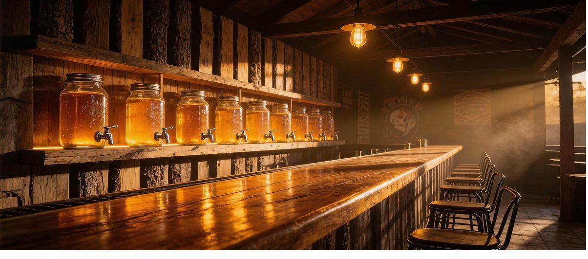
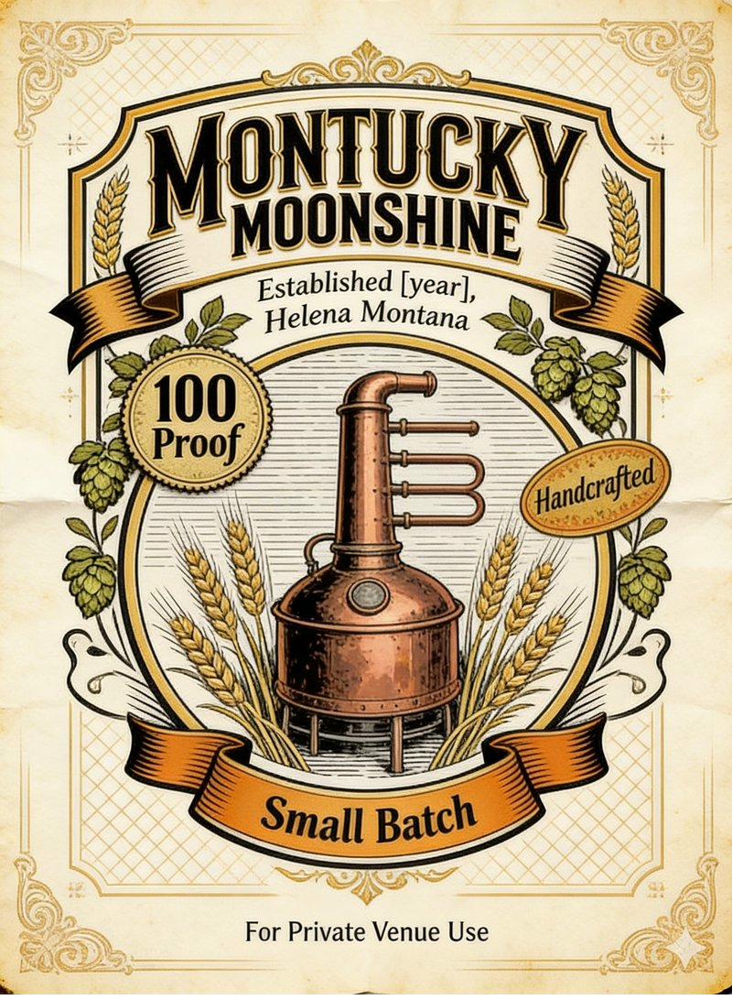
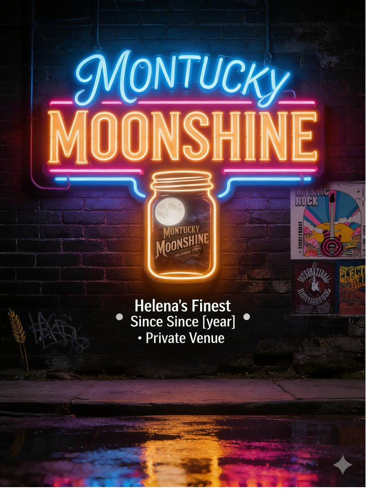
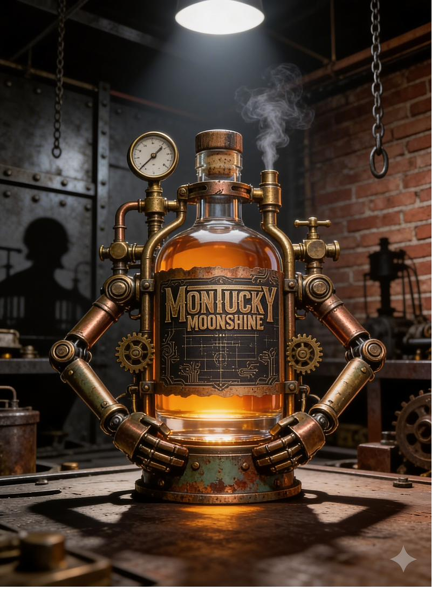

Know Your Spirit
Moonshine Guides
What to pour it with, how it compares, and what that corn sweetness actually means. Everything you need to drink better moonshine.
4 Guides
The Essential Reading
Whether you are new to moonshine or looking to go deeper, these guides cover the fundamentals — mixers, comparisons, and flavor.

What to Mix with Moonshine: 7 Perfect Pairings
The seven best moonshine mixers with exact ratios and preparation notes. Lemonade, ginger beer, apple cider, sweet tea, cola, and two more worth knowing. Includes a note on proof and why your ratios matter more with moonshine than any other spirit.
6 min read →

Moonshine vs Whiskey: What's the Difference?
Grain bill, distillation, aging — the full breakdown. Plus a practical guide to when you'd reach for one over the other.
7 min read →

What Does Moonshine Taste Like?
Corn sweetness, grain character, proof heat — the honest flavor profile of unaged corn whiskey, and how to taste it intentionally.
5 min read →

Is Moonshine Legal? The Full Answer
Commercial moonshine is completely legal — homebrewing is not. Everything you need to know about federal law, state regulations, and Montana's craft-friendly rules.
8 min read →
Quick Answers
Moonshine FAQ
Lemonade is the most popular moonshine mixer — the tartness cuts the heat beautifully. Ginger beer is a close second for a moonshine mule, and sweet tea is a classic Southern pairing. The key is citrus or a mixer with enough flavor to complement the corn sweetness.
No. Moonshine is made from a corn mash, giving it a slight sweetness and grain character that vodka doesn't have. Vodka is distilled to near-neutral flavor; moonshine is meant to taste like something.
Legal craft moonshine typically runs 80–100 proof (40–50% ABV), similar to bourbon or whiskey. Traditional illegal moonshine could be much higher — sometimes 150 proof or more — which is why over-proofed moonshine has a dangerous reputation.
The main difference is aging. Whiskey spends years in charred oak barrels, which adds color, tannins, and vanilla-caramel flavors. Moonshine skips aging entirely — it goes straight from the still to the jar, keeping the raw grain character intact.
The name comes from the practice of distilling at night by moonlight to avoid detection by tax collectors and law enforcement. "Moonshiner" was a term for anyone who worked under cover of darkness — and it stuck.
Keep Exploring